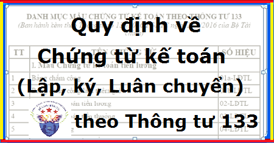

Quy định về chứng từ kế toán theo Thông tư 133 như: Quy định về chữ ký trên chứng từ kế toán, lập chứng từ kế toán, trình tự luân chuyển chứng từ kế toán, chứng từ kế toán ghi bằng tiếng nước ngoài …
Theo điều 10 Thông tư 133/2016/TT-BTC quy định:
- Các chứng từ kế toán đều thuộc loại hướng dẫn (không bắt buộc), doanh nghiệp được tự thiết kế mẫu chứng từ kế toán phù hợp với đặc điểm hoạt động và yêu cầu quản lý của đơn vị nhưng phải đảm bảo các nội dung chủ yếu và phải đảm bảo cung cấp những thông tin theo quy định của Luật Kế toán và các văn bản hướng dẫn Luật Kế toán.
Theo Chương IV Thông tư 133/2016/TT-BTC Quy định về chứng từ kế toán tại DN cụ thể như sau:
1. Quy định chung về chứng từ kế toán và hệ thống biểu mẫu chứng từ kế toán
- Chứng từ kế toán áp dụng cho các doanh nghiệp phải thực hiện theo đúng quy định của Luật Kế toán, Nghị định quy định chi tiết một số điều của Luật Kế toán và các văn bản sửa đổi, bổ sung.
- Các loại chứng từ kế toán tại danh mục và biểu mẫu chứng từ kế toán đều thuộc loại hướng dẫn. Doanh nghiệp được chủ động xây dựng, thiết kế biểu mẫu chứng từ kế toán phù hợp với đặc điểm hoạt động và yêu cầu quản lý của mình nhưng phải đáp ứng được các yêu cầu của Luật kế toán và đảm bảo nguyên tắc rõ ràng, minh bạch, kịp thời, dễ kiểm tra, kiểm soát và đối chiếu.
- Trường hợp không tự xây dựng và thiết kế biểu mẫu chứng từ cho riêng mình, doanh nghiệp có thể áp dụng hệ thống biểu mẫu chứng từ kế toán theo hướng dẫn tại Phụ lục 3 ban hành kèm theo Thông tư này để ghi chép chứng từ kế toán phù hợp với đặc điểm hoạt động sản xuất, kinh doanh và yêu cầu quản lý của doanh nghiệp.
- Các doanh nghiệp có các nghiệp vụ kinh tế, tài chính đặc thù thuộc đối tượng điều chỉnh của các văn bản pháp luật khác thì áp dụng theo quy định về chứng từ tại các văn bản đó.
2. Quy định về lập chứng từ kế toán
- Các nghiệp vụ kinh tế, tài chính phát sinh liên quan đến hoạt động của doanh nghiệp phải lập chứng từ kế toán. Chứng từ kế toán chỉ được lập một lần cho mỗi nghiệp vụ kinh tế, tài chính.
- Chứng từ kế toán phải được lập rõ ràng, đầy đủ, kịp thời, chính xác theo nội dung quy định trên mẫu. Trong trường hợp chứng từ kế toán chưa có mẫu thì đơn vị kế toán được tự thiết kế mẫu chứng từ kế toán nhưng phải bảo đảm đầy đủ các nội dung quy định của Luật Kế toán.
- Nội dung nghiệp vụ kinh tế, tài chính trên chứng từ kế toán không được viết tắt, không được tẩy xóa, sửa chữa; khi viết phải dùng bút mực, số và chữ viết phải liên tục, không ngắt quãng, chỗ trống phải gạch chéo. Chứng từ bị tẩy xóa, sửa chữa không có giá trị thanh toán và ghi sổ kế toán. Khi viết sai chứng từ kế toán thì phải hủy bỏ bằng cách gạch chéo vào chứng từ viết sai.
- Chứng từ kế toán phải được lập đủ số liên quy định. Trường hợp phải lập nhiều liên chứng từ kế toán cho một nghiệp vụ kinh tế, tài chính thì nội dung các liên phải giống nhau.
3. Quy định về chữ ký trên chứng từ kế toán:
- Chứng từ kế toán phải có đủ chữ ký theo chức danh quy định trên chứng từ. Chữ ký trên chứng từ kế toán phải được ký bằng loại mực không phai. Không được ký chứng từ kế toán bằng mực màu đỏ hoặc đóng dấu chữ ký khắc sẵn. Chữ ký trên chứng từ kế toán của một người phải thống nhất. Người lập, người duyệt và những người khác ký tên trên chứng từ kế toán phải chịu trách nhiệm về nội dung của chứng từ kế toán.
- Các doanh nghiệp chưa có chức danh kế toán trưởng thì phải cử người phụ trách kế toán để giao dịch với khách hàng, ngân hàng... Chữ ký kế toán trưởng được thay bằng chữ ký của người phụ trách kế toán của đơn vị đó. Người phụ trách kế toán phải thực hiện đúng trách nhiệm và quyền quy định cho kế toán trưởng.
- Chữ ký trên chứng từ kế toán phải do người có thẩm quyền hoặc người được ủy quyền ký. Nghiêm cấm người có thẩm quyền hoặc được ủy quyền ký chứng từ thực hiện việc ký chứng từ kế toán khi chưa ghi hoặc chưa ghi đủ nội dung chứng từ theo trách nhiệm của người ký.
- Việc phân cấp ký trên chứng từ kế toán do Tổng Giám đốc (Giám đốc), người đại diện theo pháp luật của doanh nghiệp quy định phù hợp với luật pháp, yêu cầu quản lý, đảm bảo kiểm soát chặt chẽ, an toàn tài sản.
- Chứng từ kế toán chi tiền phải do người có thẩm quyền duyệt chi và kế toán trưởng hoặc người được ủy quyền ký trước khi thực hiện. Chữ ký trên chứng từ kế toán dùng để chi tiền phải ký theo từng liên.
- Kế toán trưởng (hoặc người được ủy quyền) không được ký “thừa ủy quyền” của người đứng đầu doanh nghiệp. Người được ủy quyền không được ủy quyền lại cho người khác.
- Chứng từ điện tử phải có chữ ký điện tử. Chữ ký trên chứng từ điện tử có giá trị như chữ ký trên chứng từ bằng giấy.
4 Trình tự luân chuyển và kiểm tra chứng từ kế toán
a. Tất cả các chứng từ kế toán do doanh nghiệp lập hoặc từ bên ngoài chuyển đến đều phải tập trung tại bộ phận kế toán doanh nghiệp. Bộ phận kế toán kiểm tra những chứng từ kế toán đó và chỉ sau khi kiểm tra và xác minh tính pháp lý của chứng từ thì mới dùng những chứng từ đó để ghi sổ kế toán.
b. Trình tự luân chuyển chứng từ kế toán bao gồm các bước sau:
- Lập, tiếp nhận, xử lý chứng từ kế toán;
- Kế toán viên, kế toán trưởng kiểm tra và ký chứng từ kế toán hoặc trình người ký duyệt theo thẩm quyền;
- Phân loại, sắp xếp chứng từ kế toán, định khoản và ghi sổ kế toán;
- Lưu trữ, bảo quản chứng từ kế toán.
c. Trình tự kiểm tra chứng từ kế toán.
- Kiểm tra tính rõ ràng, trung thực, đầy đủ của các chỉ tiêu, các yếu tố ghi chép trên chứng từ kế toán;
- Kiểm tra tính hợp pháp của nghiệp vụ kinh tế, tài chính phát sinh đã ghi trên chứng từ kế toán, đối chiếu chứng từ kế toán với các tài liệu khác có liên quan;
- Kiểm tra tính chính xác của số liệu, thông tin trên chứng từ kế toán.
d. Khi kiểm tra chứng từ kế toán nếu phát hiện hành vi vi phạm chính sách, chế độ, các quy định về quản lý kinh tế, tài chính của Nhà nước, phải từ chối thực hiện (Không xuất quỹ, thanh toán, xuất kho,…) đồng thời báo ngay cho người quản lý điều hành doanh nghiệp biết để xử lý kịp thời theo pháp luật hiện hành. Đối với những chứng từ kế toán lập không đúng thủ tục, nội dung và chữ số không rõ ràng thì người chịu trách nhiệm kiểm tra hoặc ghi sổ phải trả lại, yêu cầu làm thêm thủ tục và điều chỉnh sau đó mới làm căn cứ ghi sổ.
5. Dịch chứng từ kế toán ra tiếng Việt, sử dụng, quản lý, in và phát hành biểu mẫu chứng từ kế toán
- Các chứng từ kế toán ghi bằng tiếng nước ngoài, khi sử dụng để ghi sổ kế toán và lập báo cáo tài chính ở Việt Nam phải được dịch các nội dung chủ yếu quy định tại Luật Kế toán ra tiếng Việt.
- Đơn vị kế toán phải chịu trách nhiệm về tính chính xác và đầy đủ của nội dung được dịch ra tiếng nước ngoài sang tiếng Việt. Bản chứng từ dịch ra tiếng việt phải đính kèm với bản chính bằng tiếng nước ngoài.
- Các tài liệu kèm theo chứng từ kế toán bằng tiếng nước ngoài như các loại hợp đồng, hồ sơ kèm theo chứng từ thanh toán, hồ sơ dự án đầu tư, báo cáo quyết toán và các tài liệu liên quan khác không phải dịch ra tiếng Việt trừ khi có yêu cầu của cơ quan Nhà nước có thẩm quyền.
- Các doanh nghiệp có thể mua sẵn hoặc tự thiết kế mẫu, tự in, nhưng phải đảm bảo các nội dung chủ yếu của chứng từ quy định tại Luật Kế toán.
- Chứng từ phải được bảo quản cẩn thận, không được để hư hỏng, mục nát. Séc và giấy tờ có giá phải được quản lý như tiền. Các doanh nghiệp có sử dụng chứng từ điện tử cho hoạt động kinh tế, tài chính và ghi sổ kế toán thì phải tuân thủ theo quy định của các văn bản pháp luật về chứng từ điện tử.
Xem thêm: Hệ thống mẫu chứng từ kế toán
Kế toán Diệu Tâm xin chúc bạn thành công
